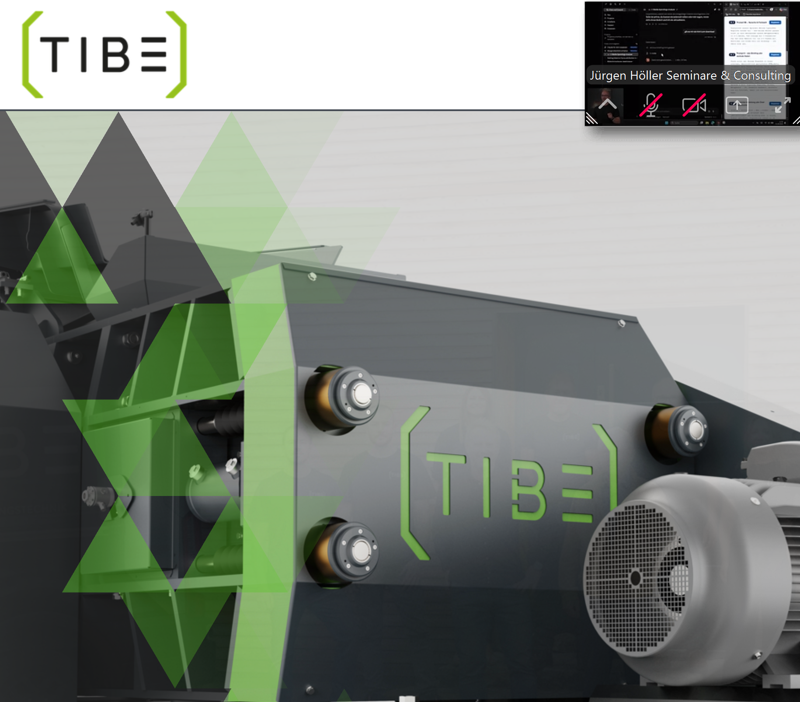

Reparatur & Service für Zerkleinerungsanlagen
Ihr Brecher steht.
Wir bringen ihn wieder zum Laufen.
Herstellerunabhängig — Backenbrecher, Prallmühlen, Walzenbrecher. Jede Marke, jedes Baujahr. Seit 1987 aus Redlham in Oberösterreich.
Büro Mo – Do 7:00 – 15:45, Fr 7:00 – 12:00. Außerhalb erreichen Sie uns mobil unter 0664 5235244.
- Herstellerunabhängig
- Verschleißteile für 31 Hersteller
- Eigene Werkstatt
- Vor Ort in AT, DE, HU, IT
Das Problem
Jede Stunde Stillstand kostet Geld.
Keine Erklärung ändert daran etwas.
„Die Anlage steht, jede Stunde kostet uns bares Geld — ich will nicht erklärt bekommen, was genau kaputt ist, ich will einfach, dass wieder produziert wird.“Betriebsleiter, Schotterwerk
„Der Rotor ist wieder fällig, das kommt eh alle paar Monate — ich will nicht jedes Mal neu recherchieren müssen, wer das schnell und ordentlich hinkriegt.“Technischer Leiter, Recyclingbetrieb
Der Hersteller ist nicht zuständig oder nicht schnell. Die Maschine ist zu alt, zu exotisch, zu lange aus dem Programm. Und während telefoniert wird, läuft die Produktion nicht — aber die Kosten laufen weiter.
Genau dafür sind wir da: Wir fragen nicht, wer die Maschine gebaut hat. Wir machen sie wieder fit.
Ihre Maschine ist dabei
Backenbrecher, Prallmühlen, Walzenbrecher
Reparatur, Instandsetzung und Verschleißteile für die Maschinen der Mineralienaufbereitung — in Steinbrüchen, Kies- und Schottergruben und Recyclingbetrieben.
Backenbrecher
Brechbacken, Lager, Schwingen
Einschwingen- und Pendelschwingenbrecher, Laborbrecher. Zwei eigene Patente stecken in unserer Arbeit an dieser Maschinengattung.
Prallmühlen
Rotorreparatur als Standbein
Rotoren, Schlagleisten, Prallwerke. Der Rotor ist der Teil, der planbar wiederkommt — und der, den wir am häufigsten machen.
Walzenbrecher
Axiale Walzenverstellung
Unsere Eigenentwicklung: Die Walze wird axial verstellt. Ergebnis ist gleichmäßiger Verschleiß statt Rillenbildung — die Walze hält länger.
Verschleißteile
Teile für 31 Hersteller
Auch für Maschinen, die längst aus dem Programm sind. Wenn es ein Teil nicht mehr gibt, fertigen wir es — Sondermaschinenbau ist unsere Wurzel.

Steht einer dieser Namen auf Ihrem Typenschild?
Für diese Hersteller haben wir schon gearbeitet. Manche dieser Marken werden längst nicht mehr gebaut — genau dann sind wir oft die einzige Adresse, die noch etwas für die Maschine tun kann.
- Brown Lenox
- Weserhütte
- Gutehoffnungshütte
- August Müller
- Ratzinger
- Extec
- Terex
- Metso
- Sandvik
- MFL
- SBM
- OM
- und viele weitere
Ihre Marke ist nicht dabei? Das heißt fast nie, dass wir nicht helfen können — rufen Sie an und nennen Sie das Typenschild: 07673 6425.
So läuft ein Einsatz ab
Drei Schritte. Der erste dauert zwei Minuten.
-
Sie rufen an und schildern, was passiert ist
Mehr brauchen wir nicht. Sie müssen nicht wissen, welches Teil kaputt ist, und auch nicht, wer die Maschine gebaut hat. Das finden wir heraus.
-
Wir befunden und nennen einen Festpreis
Sie erfahren vorher, was die Instandsetzung kostet und wie lange sie dauert. Keine Überraschungen auf der Rechnung.
-
Wir machen die Maschine wieder fit
Die Kernarbeit passiert meist in unserer eigenen Werkstatt, weil dort das Werkzeug und das Köpfchen sitzen. Wenn es nötig ist, kommen wir zu Ihnen vor Ort. Beraten tun wir weltweit.
Erfahrung
Es gibt fast keinen Brecher, den wir nicht schon gemacht haben.
Wir halten alte Brecher am Laufen. Maschinen, für die es beim Hersteller längst keine Unterstützung mehr gibt, laufen bei unseren Kunden weiter — oft besser als zuvor. Einen Extec C10 von 1995, der acht Jahre gestanden hat, hatten wir nach sechs Wochen wieder in Produktion. Dieses breite Wissen über viele Bauarten und Baujahre ist das, was Sie bei einem Neumaschinenverkäufer nicht bekommen.
Partner
DSP Přerov seit 1998, dazu Alpcrush
Die Zusammenarbeit mit dem tschechischen Maschinenhersteller DSP Přerov besteht seit 1998. Sie ist der Grund, warum wir auch bei Neumaschinen und großen Umbauten mitreden können.
Standorte
Redlham und Linz, Oberösterreich
Von hier aus sind wir in Österreich, Süddeutschland, Ungarn und Norditalien schnell vor Ort. Neun Leute, kurze Wege, keine Konzernfreigabe nötig.
Die naheliegende Alternative
Warum nicht einfach beim Hersteller anrufen?
Manchmal ist das genau richtig. Oft aber nicht — und der Unterschied entscheidet darüber, wie lange Ihre Anlage steht.
Beim Neumaschinen-Hersteller
- Zuständig für die eigene Marke
- Ältere Baureihen fallen aus der Unterstützung
- Verkauft im Zweifel eine neue Maschine
- Entscheidungen brauchen Freigaben
Bei TIBE
- Herstellerunabhängig, Teile für 31 Hersteller
- Je älter und exotischer, desto mehr unser Fall
- Reparieren ist unser Geschäft, nicht Verkaufen
- Neun Leute, kurze Wege, schnelle Entscheidung
Fair gesagt: Wenn Ihre Maschine neu und in Garantie ist, rufen Sie zuerst beim Hersteller an. Bei allem, was älter ist, aus dem Programm gelaufen oder schon einmal umgebaut wurde, sind wir die schnellere Adresse.
Aus der Werkstatt
Links das, was angeliefert wurde. Rechts dieselbe Maschine.
Maschinen behandeln wir wie Patienten: befunden, instand setzen, wieder fit machen. Nicht das Minimum, damit es läuft — das Maximum, das aus der Maschine herauszuholen ist. Zwei Bilder sagen dazu mehr als zwei Seiten Text.
Ein Extec C10 von 1995. Acht Jahre gestanden. Nach rund sechs Wochen wieder in Produktion.


Genau das meinen wir mit „besser als zuvor“: Die Maschine geht nicht geflickt zurück, sondern überholt. Wenn Sie so einen Fall vor sich haben, rufen Sie an — wir sagen Ihnen am Telefon, ob sich die Instandsetzung rechnet.
Über uns
Wer abhebt, wenn Sie anrufen
TIBE gibt es seit 1987. Wir sind neun Leute in Redlham und Linz — den Senior eingerechnet, der noch immer dabei ist — und wir bauen keine Maschinen in Serie — wir setzen sie instand und entwickeln, wo es nichts Passendes gibt, selbst etwas. Aus dieser Wurzel im Sondermaschinenbau kommen unsere zwei Patente und die axiale Walzenverstellung.
Was uns antreibt, ist ziemlich einfach: Es ärgert uns, wenn eine gute Maschine wegen eines Teils stillsteht. Deshalb steckt in jeder Instandsetzung Köpfchen und ein gutes Stück Herzblut — präzise, langlebig, effizient, keine Kompromisse.
Direkt erreichbar unter 0664 5235244 oder contact@tibe.at.

Planer zum Mitnehmen
Wann ist Ihr Rotor das nächste Mal fällig?
Unser Verschleißzyklen-Planer rechnet es aus: Bauteil, Intervall und letztes Wechseldatum eintragen — und Sie sehen auf einen Blick, wann der nächste Termin ansteht. Kostenlos, kein Abo. Wir brauchen dafür nur Ihre E-Mail-Adresse.
- Für Rotor, Backenset, Schlagleisten, Siebe — alles, was bei Ihrer Anlage regelmäßig dran ist.
- Mit Richtwerten aus der Praxis als Startpunkt, falls Sie Ihre eigenen Zyklen noch nicht in Zahlen haben.
- Farbig markiert: noch Zeit, in den nächsten 30 Tagen fällig, überfällig.
- Zum Ausdrucken und in den Werkstattordner hängen.
Wartung planen
Sie wissen schon, dass der Rotor bald fällig ist?
Dann müssen Sie nicht warten, bis es klemmt. Schreiben Sie uns kurz, um welche Maschine es geht — wir melden uns mit einem Terminvorschlag zurück. Vier Felder, keine Registrierung.